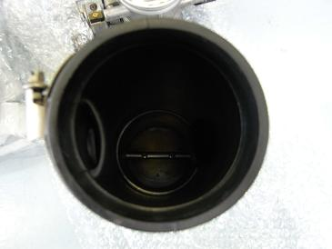
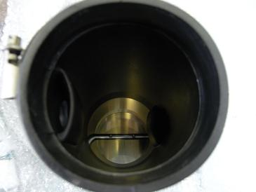
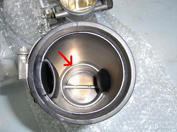
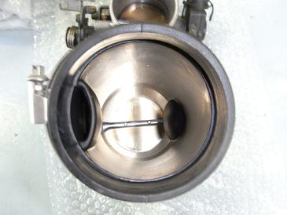

  これは、エアフロ側から見たスロットルの写真 左側がノーマルスロットル、右側がビッグスロットル。 ノーマル側は、ラバーブーツとスロットルの接合部分に段差があるのが見えると思う。 え？見えにくいですか？ |
  赤い矢印の部分が段差 右側のビッグスロットルでは、ラバーとスロットルがツライチになっているのが分かると思う。 これらがそこまで影響するのか？少し疑問も残るが、段差があるよりは無いほうが良いのは事実＾＾ こんな少しのことでも車って変化するんですね。 ちなみに、加工していただいたTRY･BOXさんとMゴローは、一切の利害関係はありません。 |